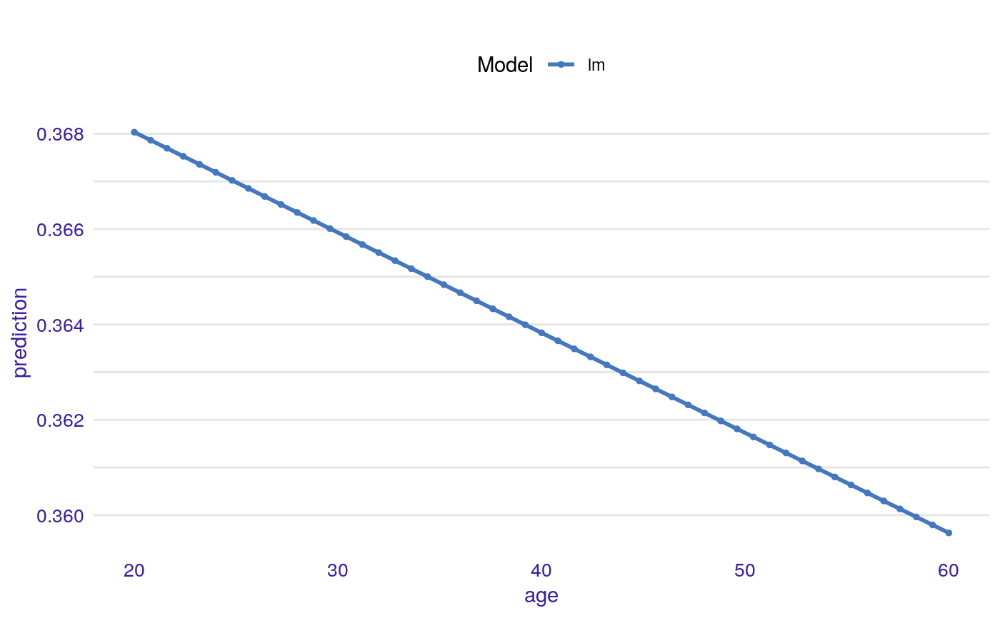
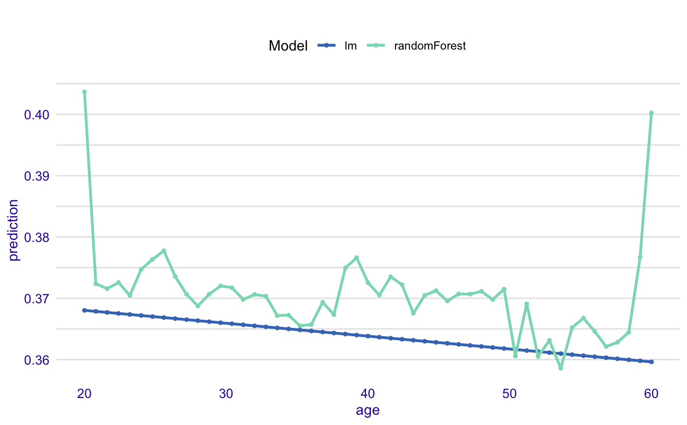
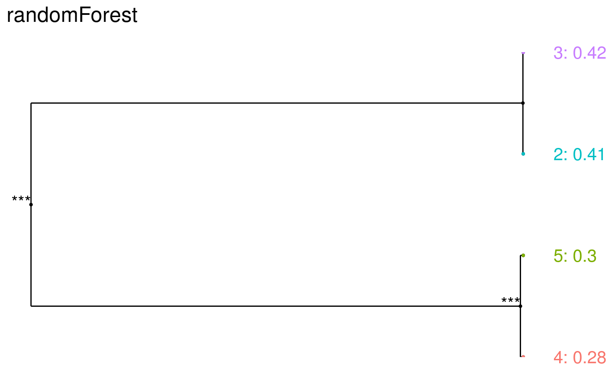
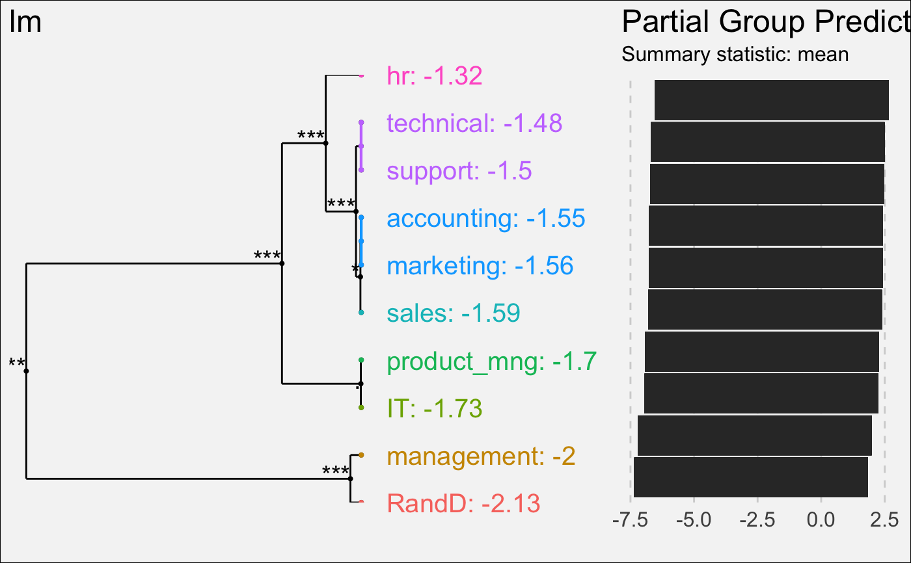
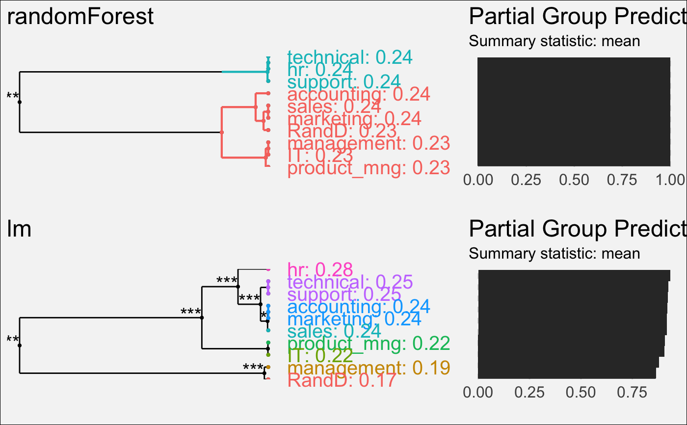

Plots Marginal Model Explanations (Single Variable Responses)
Function 'plot.variable_response_explainer' plots marginal responses for one or more explainers.
# S3 method for variable_response_explainer plot(x, ..., use_facets = FALSE)
Arguments
| x | a single variable exlainer produced with the 'single_variable' function |
|---|---|
| ... | other explainers that shall be plotted together |
| use_facets | logical. If TRUE then separate models are on different facets |
Value
a ggplot2 object
Examples
HR$evaluation <- factor(HR$evaluation) HR_glm_model <- glm(status == "fired"~., data = HR, family = "binomial") explainer_glm <- explain(HR_glm_model, data = HR) expl_glm <- variable_response(explainer_glm, "age", "pdp") plot(expl_glm)#> Warning: The response has five or fewer unique values. Are you sure you want to do regression?explainer_rf <- explain(HR_rf_model, data = HR) expl_rf <- variable_response(explainer_rf, variable = "age", type = "pdp") plot(expl_rf)plot(expl_rf, expl_glm)# Example for factor variable (with factorMerger) expl_rf <- variable_response(explainer_rf, variable = "evaluation", type = "factor") plot(expl_rf)#> #>expl_glm <- variable_response(explainer_glm, variable = "evaluation", type = "factor") plot(expl_glm)#> #># both models plot(expl_rf, expl_glm)#> #>#> #>